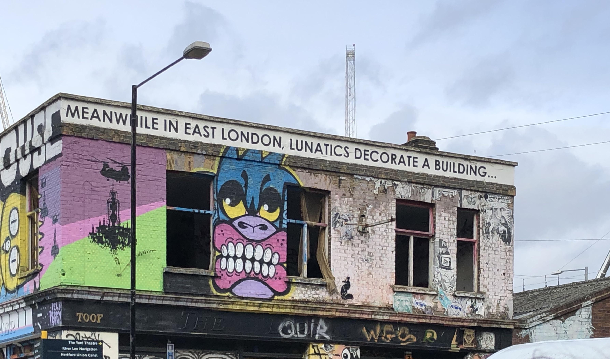
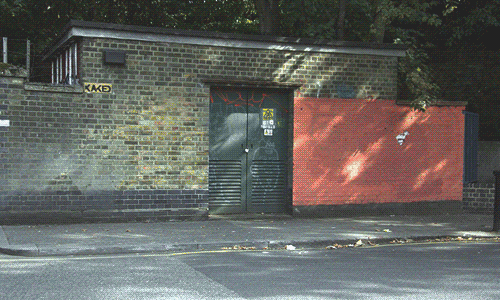
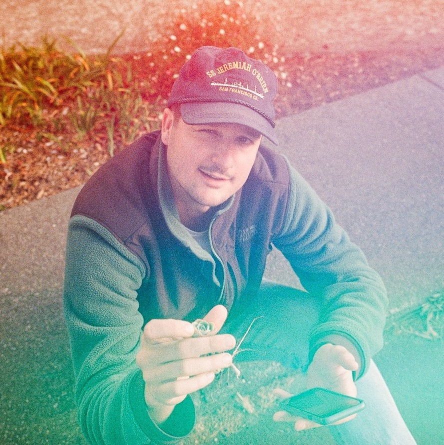

Graffiti is a glimpse into the life of an artist, one that is often not recognized, has no face, nor museum exhibits. They leave in the dead of night, there are no rules, the only thing between them and the wall is the flashing lights of a police car, otherwise the world is their canvas. Graf·fi·ti a term rooted in the word graffio or ‘a scratch’, is a nice euphemism to explain the phenomenon of someone who works a graveyard shift doing something they love while not getting paid, in an environment often fueled by adrenaline, which offers dangers such as detainment and death. Did I mention that they love what they do?

The self awareness of this irony is killing me . . .
It’s a game of cat and mouse. Get caught, spend 100 hours in community service or five years in a state prison. Run free and you can relish in the thought of what you just created. If you're good enough it can stay for sometime, however is that the desired outcome?

I was heading up the old grimy escalators of BART when a particularly piece of public art spang into view, which implanted the vision that a question that dawned on me, that lead to this entire project.
Life is short and all I had was a blueprint in my head. I imagined an interactive map documenting a sprawl of public art in the Bay Area. From big commissioned pieces laid out on a 5 story building to a tiny sticker on a post in West Oakland, the image was there, I just had no idea where to start.
Visual representation of my thought process...
Luckily at the time I was a regular at the anarcho hackerspace Noisebridge in the Mission, where many of my mentors, fellow programmers and people with vast industry knowledge coincided, allowing me a perfect opportunity to run my ideas, get advice, and start building. So it begun.
Leveraging the power of JavaScript and Google Maps api V3 I spent the remaining couple weeks designing, gathering photos, reading documentation, hitting roadblocks, revisiting buggy code and simplifying. As the nodes were placed and the vision becoming realized I obsessed in the look and feel. This is what I ended up with.
Special thanks to Streetartsf.com and Localwiki.org/oakland as they were both vital resources for connecting artist names, location data and photos. This is, by no means finished, I have aspirations to build this out in the future. In the meantime, if you think this is a cool project and you want to contribute please feel free to fork the Github and support open source! It would be great to see this thing blossom into a full scale public art repository of the Bay Area. 🏙
My reflection is two fold. What I learned from the art and what I learned from the creative coding process. I’ll start with the art. In my observations I found that the artwork often preserved local memories and gave a unique insight into the culture, values, and struggles of the surrounding neighborhoods. Much like a foggy mirror the art reflected an identity. For example the Tenderloin was just about the only place in which the art echoed struggle, poverty, incarceration, and drugs. Chinatown for instance, stayed true with the asian imagery and Chinese script. Haight street paid respects and tributes to the 60’s bohemian cultures. Large commissioned pieces were often in denser city centers, whereas alley ways were a perfect canvas for the anonymous artist.
Perhaps the most challenging part of the whole process was just keeping it simple, not just in the user interface but the Javascript as well. I found that asking feedback in how I arranged the data caught some bugs that would have been a headache to debug down the line. All in all this exercise, if you can call it that, was a success. If you made it this far you rock. If you have any questions feel free to message me on twitter. 🤖

Made with ❤️ by Mark Wild